Exercise 1370： Let CDOF be a parallelogram. BAGO is a trapezoid with BA//OG and 2BA=3OG. D is the centroid of △CBA. A, H, C are collinear and AH=2HC. D is the midpoint of BE. \(BO^{2}=DF^{2} + EO^{2}\). Prove that \(HG^{2}=AO^{2} + CO^{2}\).
Exercise 3837： Let CEDO be a trapezoid with EC//DO and EC=3DO. BCDH is a trapezoid with CB//DH and 2CB=3DH. G is the centroid of △BCA. C, D, A are collinear and CD=2DA. E, F, B are collinear and EF=2FB. G is the midpoint of FO. \(FB^{2}=BO^{2} + CO^{2}\). Prove that \(OA^{2}=FA^{2} + OH^{2}\).
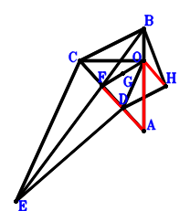
\(\because \) C, D, A are collinear and CD=2DA \(\therefore \small\overrightarrow{OD}=\dfrac{2 \small\overrightarrow{OA}}{3} + \dfrac{\small\overrightarrow{OC}}{3}\).\(\because \) EC//DO and EC=3DO \(\therefore \small\overrightarrow{OE}=\small\overrightarrow{OC} + 3 \small\overrightarrow{OD}=2 \small\overrightarrow{OA} + 2 \small\overrightarrow{OC}\).\(\because \) E, F, B are collinear and EF=2FB \(\therefore \small\overrightarrow{OF}=\dfrac{2 \small\overrightarrow{OB}}{3} + \dfrac{\small\overrightarrow{OE}}{3}=\dfrac{2 \small\overrightarrow{OA}}{3} + \dfrac{2 \small\overrightarrow{OB}}{3} + \dfrac{2 \small\overrightarrow{OC}}{3}\).\(\because \) G is the centroid of △BCA \(\therefore \small\overrightarrow{OG}=\dfrac{\small\overrightarrow{OA}}{3} + \dfrac{\small\overrightarrow{OB}}{3} + \dfrac{\small\overrightarrow{OC}}{3}\).\(\because \) G is the midpoint of FO \(\therefore \small\overrightarrow{OH}=\dfrac{2 \small\overrightarrow{OA}}{3} + \dfrac{2 \small\overrightarrow{OB}}{3} - \dfrac{\small\overrightarrow{OC}}{3}\).\(\because \) CB//DH and 2CB=3DH \( \therefore\small\overrightarrow{BF}^{2} - \small\overrightarrow{OB}^{2} - \small\overrightarrow{OC}^{2}=- \small\overrightarrow{OB}^{2} - \small\overrightarrow{OC}^{2} + \left(- \small\overrightarrow{OB} + \small\overrightarrow{OF}\right)^{2}=- \small\overrightarrow{OB}^{2} - \small\overrightarrow{OC}^{2} + \left(\dfrac{2 \small\overrightarrow{OA}}{3} - \dfrac{\small\overrightarrow{OB}}{3} + \dfrac{2 \small\overrightarrow{OC}}{3}\right)^{2}=\dfrac{4 \small\overrightarrow{OA}^{2}}{9} - \dfrac{4 \small\overrightarrow{OA} \cdot \small\overrightarrow{OB}}{9} + \dfrac{8 \small\overrightarrow{OA} \cdot \small\overrightarrow{OC}}{9} - \dfrac{8 \small\overrightarrow{OB}^{2}}{9} - \dfrac{4 \small\overrightarrow{OB} \cdot \small\overrightarrow{OC}}{9} - \dfrac{5 \small\overrightarrow{OC}^{2}}{9}=0.\)In conclusion, \(\small\overrightarrow{AF}^{2} - \small\overrightarrow{OA}^{2} + \small\overrightarrow{OH}^{2}=- \small\overrightarrow{OA}^{2} + \small\overrightarrow{OH}^{2} + \left(- \small\overrightarrow{OA} + \small\overrightarrow{OF}\right)^{2}=- \small\overrightarrow{OA}^{2} + \left(- \dfrac{\small\overrightarrow{OA}}{3} + \dfrac{2 \small\overrightarrow{OB}}{3} + \dfrac{2 \small\overrightarrow{OC}}{3}\right)^{2} + \left(\dfrac{2 \small\overrightarrow{OA}}{3} + \dfrac{2 \small\overrightarrow{OB}}{3} - \dfrac{\small\overrightarrow{OC}}{3}\right)^{2}=- \dfrac{4 \small\overrightarrow{OA}^{2}}{9} + \dfrac{4 \small\overrightarrow{OA} \cdot \small\overrightarrow{OB}}{9} - \dfrac{8 \small\overrightarrow{OA} \cdot \small\overrightarrow{OC}}{9} + \dfrac{8 \small\overrightarrow{OB}^{2}}{9} + \dfrac{4 \small\overrightarrow{OB} \cdot \small\overrightarrow{OC}}{9} + \dfrac{5 \small\overrightarrow{OC}^{2}}{9}=0\), that is, \(OA^{2}=FA^{2} + OH^{2}\).
Exercise 4234： Let CHJI be a parallelogram. AKOB is a trapezoid with AB//KO and AB=3KO. C, E, B are collinear and EB=2CE. A, H, C are collinear and HC=2AH. A, G, B are collinear and GB=2AG. C, I, B are collinear and CI=2IB. D is the midpoint of OB and FE. \(OC^{2}=FG^{2} + OJ^{2}\). Prove that \(KE^{2}=AO^{2} + OB^{2}\).
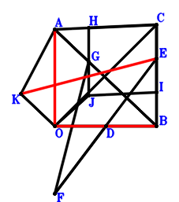
\(\because \) D is the midpoint of OB \(\therefore \small\overrightarrow{BD}=\dfrac{\small\overrightarrow{BO}}{2}\).\(\because \) C, E, B are collinear and EB=2CE \(\therefore \small\overrightarrow{BE}=\dfrac{2 \small\overrightarrow{BC}}{3}\).\(\because \) D is the midpoint of FE \(\therefore \small\overrightarrow{BF}=- \dfrac{2 \small\overrightarrow{BC}}{3} + 2 \small\overrightarrow{BD}=- \dfrac{2 \small\overrightarrow{BC}}{3} + \small\overrightarrow{BO}\).\(\because \) A, G, B are collinear and GB=2AG \(\therefore \small\overrightarrow{BG}=\dfrac{2 \small\overrightarrow{BA}}{3}\).\(\because \) A, H, C are collinear and HC=2AH \(\therefore \small\overrightarrow{BH}=\dfrac{2 \small\overrightarrow{BA}}{3} + \dfrac{\small\overrightarrow{BC}}{3}\).\(\because \) C, I, B are collinear and CI=2IB \(\therefore \small\overrightarrow{BI}=\dfrac{\small\overrightarrow{BC}}{3}\).\(\because \) CHJI is a parallelogram \(\therefore \small\overrightarrow{BJ}=\dfrac{2 \small\overrightarrow{BA}}{3} - \dfrac{\small\overrightarrow{BC}}{3}\).\(\because \) AB//KO and AB=3KO \(\therefore \small\overrightarrow{BK}=\dfrac{\small\overrightarrow{BA}}{3} + \small\overrightarrow{BO}\).\(\because \) \(OC^{2}=FG^{2} + OJ^{2}\) \( \therefore\small\overrightarrow{FG}^{2} - \small\overrightarrow{OC}^{2} + \small\overrightarrow{OJ}^{2}=- \left(\small\overrightarrow{BC} - \small\overrightarrow{BO}\right)^{2} + \left(- \small\overrightarrow{BF} + \small\overrightarrow{BG}\right)^{2} + \left(\small\overrightarrow{BJ} - \small\overrightarrow{BO}\right)^{2}=- \left(\small\overrightarrow{BC} - \small\overrightarrow{BO}\right)^{2} + \left(\dfrac{2 \small\overrightarrow{BA}}{3} - \dfrac{\small\overrightarrow{BC}}{3} - \small\overrightarrow{BO}\right)^{2} + \left(\dfrac{2 \small\overrightarrow{BA}}{3} + \dfrac{2 \small\overrightarrow{BC}}{3} - \small\overrightarrow{BO}\right)^{2}=\dfrac{8 \small\overrightarrow{BA}^{2}}{9} + \dfrac{4 \small\overrightarrow{BA} \cdot \small\overrightarrow{BC}}{9} - \dfrac{8 \small\overrightarrow{BA} \cdot \small\overrightarrow{BO}}{3} - \dfrac{4 \small\overrightarrow{BC}^{2}}{9} + \dfrac{4 \small\overrightarrow{BC} \cdot \small\overrightarrow{BO}}{3} + \small\overrightarrow{BO}^{2}=0.\)In conclusion, \(\small\overrightarrow{KE}^{2} - \small\overrightarrow{OA}^{2} - \small\overrightarrow{OB}^{2}=- \small\overrightarrow{BO}^{2} - \left(\small\overrightarrow{BA} - \small\overrightarrow{BO}\right)^{2} + \left(\small\overrightarrow{BE} - \small\overrightarrow{BK}\right)^{2}=- \small\overrightarrow{BO}^{2} - \left(\small\overrightarrow{BA} - \small\overrightarrow{BO}\right)^{2} + \left(- \dfrac{\small\overrightarrow{BA}}{3} + \dfrac{2 \small\overrightarrow{BC}}{3} - \small\overrightarrow{BO}\right)^{2}=- \dfrac{8 \small\overrightarrow{BA}^{2}}{9} - \dfrac{4 \small\overrightarrow{BA} \cdot \small\overrightarrow{BC}}{9} + \dfrac{8 \small\overrightarrow{BA} \cdot \small\overrightarrow{BO}}{3} + \dfrac{4 \small\overrightarrow{BC}^{2}}{9} - \dfrac{4 \small\overrightarrow{BC} \cdot \small\overrightarrow{BO}}{3} - \small\overrightarrow{BO}^{2}=0\), that is, \(KE^{2}=AO^{2} + OB^{2}\).
Exercise 5451： Let GBFO be a parallelogram. ODAE is a trapezoid with AE//DO and 2AE=3DO. I is the centroid of △CBA. B, D, A are collinear and DA=2BD. C, F, A are collinear and CF=2FA. B, H, C are collinear and HC=2BH. I is the midpoint of JC. \(\dfrac{4 CE^{2}}{9}=BO^{2} + CO^{2}\). Prove that \(OA^{2}=GH^{2} + JO^{2}\).
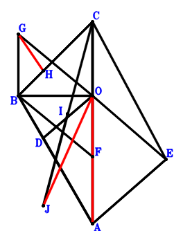
\(\because \) B, D, A are collinear and DA=2BD \(\therefore \small\overrightarrow{OD}=\dfrac{\small\overrightarrow{OA}}{3} + \dfrac{2 \small\overrightarrow{OB}}{3}\).\(\because \) AE//DO and 2AE=3DO \(\therefore \small\overrightarrow{OE}=\small\overrightarrow{OA} - \dfrac{3 \small\overrightarrow{OD}}{2}=\dfrac{\small\overrightarrow{OA}}{2} - \small\overrightarrow{OB}\).\(\because \) C, F, A are collinear and CF=2FA \(\therefore \small\overrightarrow{OF}=\dfrac{2 \small\overrightarrow{OA}}{3} + \dfrac{\small\overrightarrow{OC}}{3}\).\(\because \) GBFO is a parallelogram \(\therefore \small\overrightarrow{OG}=\small\overrightarrow{OB} - \small\overrightarrow{OF}=- \dfrac{2 \small\overrightarrow{OA}}{3} + \small\overrightarrow{OB} - \dfrac{\small\overrightarrow{OC}}{3}\).\(\because \) B, H, C are collinear and HC=2BH \(\therefore \small\overrightarrow{OH}=\dfrac{2 \small\overrightarrow{OB}}{3} + \dfrac{\small\overrightarrow{OC}}{3}\).\(\because \) I is the centroid of △CBA \(\therefore \small\overrightarrow{OI}=\dfrac{\small\overrightarrow{OA}}{3} + \dfrac{\small\overrightarrow{OB}}{3} + \dfrac{\small\overrightarrow{OC}}{3}\).\(\because \) I is the midpoint of JC \(\therefore \small\overrightarrow{OJ}=- \small\overrightarrow{OC} + 2 \small\overrightarrow{OI}=\dfrac{2 \small\overrightarrow{OA}}{3} + \dfrac{2 \small\overrightarrow{OB}}{3} - \dfrac{\small\overrightarrow{OC}}{3}\).\(\because \) \(\dfrac{4 CE^{2}}{9}=BO^{2} + CO^{2}\) \( \therefore\dfrac{4 \small\overrightarrow{EC}^{2}}{9} - \small\overrightarrow{OB}^{2} - \small\overrightarrow{OC}^{2}=- \small\overrightarrow{OB}^{2} - \small\overrightarrow{OC}^{2} + \dfrac{4 \left(\small\overrightarrow{OC} - \small\overrightarrow{OE}\right)^{2}}{9}=- \small\overrightarrow{OB}^{2} - \small\overrightarrow{OC}^{2} + \dfrac{4 \left(- \dfrac{\small\overrightarrow{OA}}{2} + \small\overrightarrow{OB} + \small\overrightarrow{OC}\right)^{2}}{9}=\dfrac{\small\overrightarrow{OA}^{2}}{9} - \dfrac{4 \small\overrightarrow{OA} \cdot \small\overrightarrow{OB}}{9} - \dfrac{4 \small\overrightarrow{OA} \cdot \small\overrightarrow{OC}}{9} - \dfrac{5 \small\overrightarrow{OB}^{2}}{9} + \dfrac{8 \small\overrightarrow{OB} \cdot \small\overrightarrow{OC}}{9} - \dfrac{5 \small\overrightarrow{OC}^{2}}{9}=0.\)In conclusion, \(\small\overrightarrow{GH}^{2} - \small\overrightarrow{OA}^{2} + \small\overrightarrow{OJ}^{2}=- \small\overrightarrow{OA}^{2} + \small\overrightarrow{OJ}^{2} + \left(- \small\overrightarrow{OG} + \small\overrightarrow{OH}\right)^{2}=- \small\overrightarrow{OA}^{2} + \left(\dfrac{2 \small\overrightarrow{OA}}{3} - \dfrac{\small\overrightarrow{OB}}{3} + \dfrac{2 \small\overrightarrow{OC}}{3}\right)^{2} + \left(\dfrac{2 \small\overrightarrow{OA}}{3} + \dfrac{2 \small\overrightarrow{OB}}{3} - \dfrac{\small\overrightarrow{OC}}{3}\right)^{2}=- \dfrac{\small\overrightarrow{OA}^{2}}{9} + \dfrac{4 \small\overrightarrow{OA} \cdot \small\overrightarrow{OB}}{9} + \dfrac{4 \small\overrightarrow{OA} \cdot \small\overrightarrow{OC}}{9} + \dfrac{5 \small\overrightarrow{OB}^{2}}{9} - \dfrac{8 \small\overrightarrow{OB} \cdot \small\overrightarrow{OC}}{9} + \dfrac{5 \small\overrightarrow{OC}^{2}}{9}=0\), that is, \(OA^{2}=GH^{2} + JO^{2}\).
Exercise 8702： Let HAIO be a parallelogram. CBFA is a trapezoid with BC//FA and BC=2FA. D is the centroid of △CBA. B, G, F are collinear and BG=2GF. A, H, C are collinear and HC=2AH. B, J, C are collinear and JC=2BJ. D is the midpoint of EO. \(BO^{2}=BE^{2} + GO^{2}\). Prove that \(JI^{2}=AO^{2} + CO^{2}\).
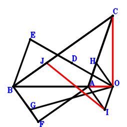
\(\because \) D is the centroid of △CBA \(\therefore \small\overrightarrow{OD}=\dfrac{\small\overrightarrow{OA}}{3} + \dfrac{\small\overrightarrow{OB}}{3} + \dfrac{\small\overrightarrow{OC}}{3}\).\(\because \) D is the midpoint of EO \(\therefore \small\overrightarrow{OE}=2 \small\overrightarrow{OD}=\dfrac{2 \small\overrightarrow{OA}}{3} + \dfrac{2 \small\overrightarrow{OB}}{3} + \dfrac{2 \small\overrightarrow{OC}}{3}\).\(\because \) BC//FA and BC=2FA \(\therefore \small\overrightarrow{OF}=\small\overrightarrow{OA} + \dfrac{\small\overrightarrow{OB}}{2} - \dfrac{\small\overrightarrow{OC}}{2}\).\(\because \) B, G, F are collinear and BG=2GF \(\therefore \small\overrightarrow{OG}=\dfrac{\small\overrightarrow{OB}}{3} + \dfrac{2 \small\overrightarrow{OF}}{3}=\dfrac{2 \small\overrightarrow{OA}}{3} + \dfrac{2 \small\overrightarrow{OB}}{3} - \dfrac{\small\overrightarrow{OC}}{3}\).\(\because \) A, H, C are collinear and HC=2AH \(\therefore \small\overrightarrow{OH}=\dfrac{2 \small\overrightarrow{OA}}{3} + \dfrac{\small\overrightarrow{OC}}{3}\).\(\because \) HAIO is a parallelogram \(\therefore \small\overrightarrow{OI}=\small\overrightarrow{OA} - \small\overrightarrow{OH}=\dfrac{\small\overrightarrow{OA}}{3} - \dfrac{\small\overrightarrow{OC}}{3}\).\(\because \) B, J, C are collinear and JC=2BJ \(\therefore \small\overrightarrow{OJ}=\dfrac{2 \small\overrightarrow{OB}}{3} + \dfrac{\small\overrightarrow{OC}}{3}\).\(\because \) \(BO^{2}=BE^{2} + GO^{2}\) \( \therefore\small\overrightarrow{BE}^{2} - \small\overrightarrow{OB}^{2} + \small\overrightarrow{OG}^{2}=- \small\overrightarrow{OB}^{2} + \small\overrightarrow{OG}^{2} + \left(- \small\overrightarrow{OB} + \small\overrightarrow{OE}\right)^{2}=- \small\overrightarrow{OB}^{2} + \left(\dfrac{2 \small\overrightarrow{OA}}{3} - \dfrac{\small\overrightarrow{OB}}{3} + \dfrac{2 \small\overrightarrow{OC}}{3}\right)^{2} + \left(\dfrac{2 \small\overrightarrow{OA}}{3} + \dfrac{2 \small\overrightarrow{OB}}{3} - \dfrac{\small\overrightarrow{OC}}{3}\right)^{2}=\dfrac{8 \small\overrightarrow{OA}^{2}}{9} + \dfrac{4 \small\overrightarrow{OA} \cdot \small\overrightarrow{OB}}{9} + \dfrac{4 \small\overrightarrow{OA} \cdot \small\overrightarrow{OC}}{9} - \dfrac{4 \small\overrightarrow{OB}^{2}}{9} - \dfrac{8 \small\overrightarrow{OB} \cdot \small\overrightarrow{OC}}{9} + \dfrac{5 \small\overrightarrow{OC}^{2}}{9}=0.\)In conclusion, \(\small\overrightarrow{IJ}^{2} - \small\overrightarrow{OA}^{2} - \small\overrightarrow{OC}^{2}=- \small\overrightarrow{OA}^{2} - \small\overrightarrow{OC}^{2} + \left(- \small\overrightarrow{OI} + \small\overrightarrow{OJ}\right)^{2}=- \small\overrightarrow{OA}^{2} - \small\overrightarrow{OC}^{2} + \left(- \dfrac{\small\overrightarrow{OA}}{3} + \dfrac{2 \small\overrightarrow{OB}}{3} + \dfrac{2 \small\overrightarrow{OC}}{3}\right)^{2}=- \dfrac{8 \small\overrightarrow{OA}^{2}}{9} - \dfrac{4 \small\overrightarrow{OA} \cdot \small\overrightarrow{OB}}{9} - \dfrac{4 \small\overrightarrow{OA} \cdot \small\overrightarrow{OC}}{9} + \dfrac{4 \small\overrightarrow{OB}^{2}}{9} + \dfrac{8 \small\overrightarrow{OB} \cdot \small\overrightarrow{OC}}{9} - \dfrac{5 \small\overrightarrow{OC}^{2}}{9}=0\), that is, \(JI^{2}=AO^{2} + CO^{2}\).
Exercise 12569： Let FDBE and AIOH be parallelograms. H is the centroid of △CAB. A, D, B are collinear and DB=2AD. C, E, B are collinear and EB=2CE. H, G are the midpoints of DE, OC, respectively. OB=2HG and FO=OC. Prove that IH=AO.
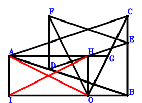
\(\because \) A, D, B are collinear and DB=2AD \(\therefore \small\overrightarrow{BD}=\dfrac{2 \small\overrightarrow{BA}}{3}\).\(\because \) C, E, B are collinear and EB=2CE \(\therefore \small\overrightarrow{BE}=\dfrac{2 \small\overrightarrow{BC}}{3}\).\(\because \) FDBE is a parallelogram \(\therefore \small\overrightarrow{BF}=\dfrac{2 \small\overrightarrow{BA}}{3} + \dfrac{2 \small\overrightarrow{BC}}{3}\).\(\because \) G is the midpoint of OC \(\therefore \small\overrightarrow{BG}=\dfrac{\small\overrightarrow{BC}}{2} + \dfrac{\small\overrightarrow{BO}}{2}\).\(\because \) H is the midpoint of DE \(\therefore \small\overrightarrow{BH}=\dfrac{\small\overrightarrow{BA}}{3} + \dfrac{\small\overrightarrow{BE}}{2}=\dfrac{\small\overrightarrow{BA}}{3} + \dfrac{\small\overrightarrow{BC}}{3}\).\(\because \) H is the centroid of △CAB \(\therefore \small\overrightarrow{BI}=\small\overrightarrow{BA} - \small\overrightarrow{BH} + \small\overrightarrow{BO}=\dfrac{2 \small\overrightarrow{BA}}{3} - \dfrac{\small\overrightarrow{BC}}{3} + \small\overrightarrow{BO}\).\(\because \) AIOH is a parallelogram \(\therefore - \small\overrightarrow{OC}^{2} + \small\overrightarrow{OF}^{2}=- \left(\small\overrightarrow{BC} - \small\overrightarrow{BO}\right)^{2} + \left(\small\overrightarrow{BF} - \small\overrightarrow{BO}\right)^{2}=- \left(\small\overrightarrow{BC} - \small\overrightarrow{BO}\right)^{2} + \left(\dfrac{2 \small\overrightarrow{BA}}{3} + \dfrac{2 \small\overrightarrow{BC}}{3} - \small\overrightarrow{BO}\right)^{2}=\dfrac{4 \small\overrightarrow{BA}^{2}}{9} + \dfrac{8 \small\overrightarrow{BA} \cdot \small\overrightarrow{BC}}{9} - \dfrac{4 \small\overrightarrow{BA} \cdot \small\overrightarrow{BO}}{3} - \dfrac{5 \small\overrightarrow{BC}^{2}}{9} + \dfrac{2 \small\overrightarrow{BC} \cdot \small\overrightarrow{BO}}{3}=0\) . . . . . . \(①\)\(\because \) FO=OC \(\therefore 4 \small\overrightarrow{GH}^{2} - \small\overrightarrow{OB}^{2}=- \small\overrightarrow{BO}^{2} + 4 \left(- \small\overrightarrow{BG} + \small\overrightarrow{BH}\right)^{2}=- \small\overrightarrow{BO}^{2} + 4 \left(\dfrac{\small\overrightarrow{BA}}{3} - \dfrac{\small\overrightarrow{BC}}{6} - \dfrac{\small\overrightarrow{BO}}{2}\right)^{2}=\dfrac{4 \small\overrightarrow{BA}^{2}}{9} - \dfrac{4 \small\overrightarrow{BA} \cdot \small\overrightarrow{BC}}{9} - \dfrac{4 \small\overrightarrow{BA} \cdot \small\overrightarrow{BO}}{3} + \dfrac{\small\overrightarrow{BC}^{2}}{9} + \dfrac{2 \small\overrightarrow{BC} \cdot \small\overrightarrow{BO}}{3}=0\) . . . . . . \(②\)In conclusion, \(\small\overrightarrow{IH}^{2} - \small\overrightarrow{OA}^{2}=- \left(\small\overrightarrow{BA} - \small\overrightarrow{BO}\right)^{2} + \left(\small\overrightarrow{BH} - \small\overrightarrow{BI}\right)^{2}=- \left(\small\overrightarrow{BA} - \small\overrightarrow{BO}\right)^{2} + \left(- \dfrac{\small\overrightarrow{BA}}{3} + \dfrac{2 \small\overrightarrow{BC}}{3} - \small\overrightarrow{BO}\right)^{2}=- \dfrac{8 \small\overrightarrow{BA}^{2}}{9} - \dfrac{4 \small\overrightarrow{BA} \cdot \small\overrightarrow{BC}}{9} + \dfrac{8 \small\overrightarrow{BA} \cdot \small\overrightarrow{BO}}{3} + \dfrac{4 \small\overrightarrow{BC}^{2}}{9} - \dfrac{4 \small\overrightarrow{BC} \cdot \small\overrightarrow{BO}}{3}=-①-②=0\), that is, IH=AO.
Exercise 14219： Let AHCB be a trapezoid with HC//AB and HC=2AB. I is the centroid of △HCB. B, E, C are collinear and EC=2BE. A, D, C are collinear and DC=2AD. F is the midpoint of OG and DE. \(CG^{2}=OB^{2} + OC^{2}\). Prove that \(AO^{2}=AG^{2} + OI^{2}\).
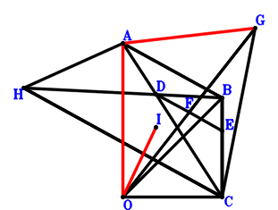
\(\because \) A, D, C are collinear and DC=2AD \(\therefore \small\overrightarrow{CD}=\dfrac{2 \small\overrightarrow{CA}}{3}\).\(\because \) B, E, C are collinear and EC=2BE \(\therefore \small\overrightarrow{CE}=\dfrac{2 \small\overrightarrow{CB}}{3}\).\(\because \) F is the midpoint of DE \(\therefore \small\overrightarrow{CF}=\dfrac{\small\overrightarrow{CA}}{3} + \dfrac{\small\overrightarrow{CE}}{2}=\dfrac{\small\overrightarrow{CA}}{3} + \dfrac{\small\overrightarrow{CB}}{3}\).\(\because \) F is the midpoint of OG \(\therefore \small\overrightarrow{CG}=2 \small\overrightarrow{CF} - \small\overrightarrow{CO}=\dfrac{2 \small\overrightarrow{CA}}{3} + \dfrac{2 \small\overrightarrow{CB}}{3} - \small\overrightarrow{CO}\).\(\because \) HC//AB and HC=2AB \(\therefore \small\overrightarrow{CH}=2 \small\overrightarrow{CA} - 2 \small\overrightarrow{CB}\).\(\because \) I is the centroid of △HCB \(\therefore \small\overrightarrow{CI}=\dfrac{\small\overrightarrow{CB}}{3} + \dfrac{\small\overrightarrow{CH}}{3}=\dfrac{2 \small\overrightarrow{CA}}{3} - \dfrac{\small\overrightarrow{CB}}{3}\).\(\because \) \(CG^{2}=OB^{2} + OC^{2}\) \( \therefore\small\overrightarrow{CG}^{2} - \small\overrightarrow{OB}^{2} - \small\overrightarrow{OC}^{2}=\small\overrightarrow{CG}^{2} - \small\overrightarrow{CO}^{2} - \left(\small\overrightarrow{CB} - \small\overrightarrow{CO}\right)^{2}=- \small\overrightarrow{CO}^{2} - \left(\small\overrightarrow{CB} - \small\overrightarrow{CO}\right)^{2} + \left(\dfrac{2 \small\overrightarrow{CA}}{3} + \dfrac{2 \small\overrightarrow{CB}}{3} - \small\overrightarrow{CO}\right)^{2}=\dfrac{4 \small\overrightarrow{CA}^{2}}{9} + \dfrac{8 \small\overrightarrow{CA} \cdot \small\overrightarrow{CB}}{9} - \dfrac{4 \small\overrightarrow{CA} \cdot \small\overrightarrow{CO}}{3} - \dfrac{5 \small\overrightarrow{CB}^{2}}{9} + \dfrac{2 \small\overrightarrow{CB} \cdot \small\overrightarrow{CO}}{3} - \small\overrightarrow{CO}^{2}=0.\)In conclusion, \(\small\overrightarrow{AG}^{2} - \small\overrightarrow{OA}^{2} + \small\overrightarrow{OI}^{2}=\left(- \small\overrightarrow{CA} + \small\overrightarrow{CG}\right)^{2} - \left(\small\overrightarrow{CA} - \small\overrightarrow{CO}\right)^{2} + \left(\small\overrightarrow{CI} - \small\overrightarrow{CO}\right)^{2}=- \left(\small\overrightarrow{CA} - \small\overrightarrow{CO}\right)^{2} + \left(- \dfrac{\small\overrightarrow{CA}}{3} + \dfrac{2 \small\overrightarrow{CB}}{3} - \small\overrightarrow{CO}\right)^{2} + \left(\dfrac{2 \small\overrightarrow{CA}}{3} - \dfrac{\small\overrightarrow{CB}}{3} - \small\overrightarrow{CO}\right)^{2}=- \dfrac{4 \small\overrightarrow{CA}^{2}}{9} - \dfrac{8 \small\overrightarrow{CA} \cdot \small\overrightarrow{CB}}{9} + \dfrac{4 \small\overrightarrow{CA} \cdot \small\overrightarrow{CO}}{3} + \dfrac{5 \small\overrightarrow{CB}^{2}}{9} - \dfrac{2 \small\overrightarrow{CB} \cdot \small\overrightarrow{CO}}{3} + \small\overrightarrow{CO}^{2}=0\), that is, \(AO^{2}=AG^{2} + OI^{2}\).
Exercise 17445： Let IHOD and ACFB be parallelograms. DOEC is a trapezoid with EC//OD and 2EC=3OD. G is the centroid of △BCF. B, D, C are collinear and DC=2BD. A, H, C are collinear and HC=2AH. \(\dfrac{4 EA^{2}}{9}=OB^{2} + OC^{2}\). Prove that \(AO^{2}=BI^{2} + OG^{2}\).
Exercise 18183： Let AGOB be a trapezoid with AB//GO and 2AB=3GO. DOCE is a trapezoid with CE//OD and CE=3OD. D is the centroid of △ACB. F is the centroid of △ABE. C, H, A are collinear and HA=2CH. I is the midpoint of OC. GH=OB and BF=OC. Prove that OA=2ID.
Exercise 18653： Let GAHO be a parallelogram. D is the centroid of △CBA. B, I, A are collinear and BI=2IA. B, G, C are collinear and BG=2GC. D, F are the midpoints of EO, CO, respectively. \(BO^{2}=BE^{2} + 4 DF^{2}\). Prove that \(IH^{2}=AO^{2} + CO^{2}\).
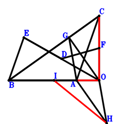
\(\because \) D is the centroid of △CBA \(\therefore \small\overrightarrow{OD}=\dfrac{\small\overrightarrow{OA}}{3} + \dfrac{\small\overrightarrow{OB}}{3} + \dfrac{\small\overrightarrow{OC}}{3}\).\(\because \) D is the midpoint of EO \(\therefore \small\overrightarrow{OE}=2 \small\overrightarrow{OD}=\dfrac{2 \small\overrightarrow{OA}}{3} + \dfrac{2 \small\overrightarrow{OB}}{3} + \dfrac{2 \small\overrightarrow{OC}}{3}\).\(\because \) F is the midpoint of CO \(\therefore \small\overrightarrow{OF}=\dfrac{\small\overrightarrow{OC}}{2}\).\(\because \) B, G, C are collinear and BG=2GC \(\therefore \small\overrightarrow{OG}=\dfrac{\small\overrightarrow{OB}}{3} + \dfrac{2 \small\overrightarrow{OC}}{3}\).\(\because \) GAHO is a parallelogram \(\therefore \small\overrightarrow{OH}=\small\overrightarrow{OA} - \small\overrightarrow{OG}=\small\overrightarrow{OA} - \dfrac{\small\overrightarrow{OB}}{3} - \dfrac{2 \small\overrightarrow{OC}}{3}\).\(\because \) B, I, A are collinear and BI=2IA \(\therefore \small\overrightarrow{OI}=\dfrac{2 \small\overrightarrow{OA}}{3} + \dfrac{\small\overrightarrow{OB}}{3}\).\(\because \) \(BO^{2}=BE^{2} + 4 DF^{2}\) \( \therefore\small\overrightarrow{BE}^{2} + 4 \small\overrightarrow{FD}^{2} - \small\overrightarrow{OB}^{2}=- \small\overrightarrow{OB}^{2} + \left(- \small\overrightarrow{OB} + \small\overrightarrow{OE}\right)^{2} + 4 \left(\small\overrightarrow{OD} - \small\overrightarrow{OF}\right)^{2}=- \small\overrightarrow{OB}^{2} + 4 \left(\dfrac{\small\overrightarrow{OA}}{3} + \dfrac{\small\overrightarrow{OB}}{3} - \dfrac{\small\overrightarrow{OC}}{6}\right)^{2} + \left(\dfrac{2 \small\overrightarrow{OA}}{3} - \dfrac{\small\overrightarrow{OB}}{3} + \dfrac{2 \small\overrightarrow{OC}}{3}\right)^{2}=\dfrac{8 \small\overrightarrow{OA}^{2}}{9} + \dfrac{4 \small\overrightarrow{OA} \cdot \small\overrightarrow{OB}}{9} + \dfrac{4 \small\overrightarrow{OA} \cdot \small\overrightarrow{OC}}{9} - \dfrac{4 \small\overrightarrow{OB}^{2}}{9} - \dfrac{8 \small\overrightarrow{OB} \cdot \small\overrightarrow{OC}}{9} + \dfrac{5 \small\overrightarrow{OC}^{2}}{9}=0.\)In conclusion, \(\small\overrightarrow{HI}^{2} - \small\overrightarrow{OA}^{2} - \small\overrightarrow{OC}^{2}=- \small\overrightarrow{OA}^{2} - \small\overrightarrow{OC}^{2} + \left(- \small\overrightarrow{OH} + \small\overrightarrow{OI}\right)^{2}=- \small\overrightarrow{OA}^{2} - \small\overrightarrow{OC}^{2} + \left(- \dfrac{\small\overrightarrow{OA}}{3} + \dfrac{2 \small\overrightarrow{OB}}{3} + \dfrac{2 \small\overrightarrow{OC}}{3}\right)^{2}=- \dfrac{8 \small\overrightarrow{OA}^{2}}{9} - \dfrac{4 \small\overrightarrow{OA} \cdot \small\overrightarrow{OB}}{9} - \dfrac{4 \small\overrightarrow{OA} \cdot \small\overrightarrow{OC}}{9} + \dfrac{4 \small\overrightarrow{OB}^{2}}{9} + \dfrac{8 \small\overrightarrow{OB} \cdot \small\overrightarrow{OC}}{9} - \dfrac{5 \small\overrightarrow{OC}^{2}}{9}=0\), that is, \(IH^{2}=AO^{2} + CO^{2}\).
Exercise 20432： Let EDOA be a trapezoid with AE//OD and AE=3OD. HCOG is a trapezoid with HC//GO and HC=3GO. F is the centroid of △HAB. G is the centroid of △BCA. B, D, A are collinear and DA=2BD. C, F, E are collinear and FE=2CF. CF=CO and FB=OA. Prove that FA=BO.
Exercise 20951： Let FDOE be a parallelogram. AHGB is a trapezoid with AB//HG and 2AB=3HG. B, E, C are collinear and EC=2BE. A, D, C are collinear and DC=2AD. B, G, C are collinear and BG=2GC. \(CF^{2}=OB^{2} + OC^{2}\). Prove that \(AO^{2}=AF^{2} + OH^{2}\).
Exercise 22679： Let D be the centroid of △BAC. B, G, A are collinear and GA=2BG. C, H, A are collinear and HA=2CH. I, F are the midpoints of BO, OC, respectively. D is the midpoint of GH and OE. OA=2FD and AE=BO. Prove that OC=2ID.
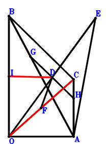
\(\because \) D is the centroid of △BAC \(\therefore \small\overrightarrow{AD}=\dfrac{\small\overrightarrow{AB}}{3} + \dfrac{\small\overrightarrow{AC}}{3}\).\(\because \) D is the midpoint of OE \(\therefore \small\overrightarrow{AE}=2 \small\overrightarrow{AD} - \small\overrightarrow{AO}=\dfrac{2 \small\overrightarrow{AB}}{3} + \dfrac{2 \small\overrightarrow{AC}}{3} - \small\overrightarrow{AO}\).\(\because \) F is the midpoint of OC \(\therefore \small\overrightarrow{AF}=\dfrac{\small\overrightarrow{AC}}{2} + \dfrac{\small\overrightarrow{AO}}{2}\).\(\because \) B, G, A are collinear and GA=2BG \(\therefore \small\overrightarrow{AG}=\dfrac{2 \small\overrightarrow{AB}}{3}\).\(\because \) C, H, A are collinear and HA=2CH \(\therefore \small\overrightarrow{AH}=\dfrac{2 \small\overrightarrow{AC}}{3}\).\(\because \) D is the midpoint of GH \(\therefore \small\overrightarrow{AI}=\dfrac{\small\overrightarrow{AB}}{2} + \dfrac{\small\overrightarrow{AO}}{2}\).\(\because \) I is the midpoint of BO \(\therefore \small\overrightarrow{AE}^{2} - \small\overrightarrow{OB}^{2}=\small\overrightarrow{AE}^{2} - \left(\small\overrightarrow{AB} - \small\overrightarrow{AO}\right)^{2}=- \left(\small\overrightarrow{AB} - \small\overrightarrow{AO}\right)^{2} + \left(\dfrac{2 \small\overrightarrow{AB}}{3} + \dfrac{2 \small\overrightarrow{AC}}{3} - \small\overrightarrow{AO}\right)^{2}=- \dfrac{5 \small\overrightarrow{AB}^{2}}{9} + \dfrac{8 \small\overrightarrow{AB} \cdot \small\overrightarrow{AC}}{9} + \dfrac{2 \small\overrightarrow{AB} \cdot \small\overrightarrow{AO}}{3} + \dfrac{4 \small\overrightarrow{AC}^{2}}{9} - \dfrac{4 \small\overrightarrow{AC} \cdot \small\overrightarrow{AO}}{3}=0\) . . . . . . \(①\)\(\because \) AE=BO \(\therefore 4 \small\overrightarrow{FD}^{2} - \small\overrightarrow{OA}^{2}=- \small\overrightarrow{AO}^{2} + 4 \left(\small\overrightarrow{AD} - \small\overrightarrow{AF}\right)^{2}=- \small\overrightarrow{AO}^{2} + 4 \left(\dfrac{\small\overrightarrow{AB}}{3} - \dfrac{\small\overrightarrow{AC}}{6} - \dfrac{\small\overrightarrow{AO}}{2}\right)^{2}=\dfrac{4 \small\overrightarrow{AB}^{2}}{9} - \dfrac{4 \small\overrightarrow{AB} \cdot \small\overrightarrow{AC}}{9} - \dfrac{4 \small\overrightarrow{AB} \cdot \small\overrightarrow{AO}}{3} + \dfrac{\small\overrightarrow{AC}^{2}}{9} + \dfrac{2 \small\overrightarrow{AC} \cdot \small\overrightarrow{AO}}{3}=0\) . . . . . . \(②\)In conclusion, \(4 \small\overrightarrow{ID}^{2} - \small\overrightarrow{OC}^{2}=- \left(\small\overrightarrow{AC} - \small\overrightarrow{AO}\right)^{2} + 4 \left(\small\overrightarrow{AD} - \small\overrightarrow{AI}\right)^{2}=- \left(\small\overrightarrow{AC} - \small\overrightarrow{AO}\right)^{2} + 4 \left(- \dfrac{\small\overrightarrow{AB}}{6} + \dfrac{\small\overrightarrow{AC}}{3} - \dfrac{\small\overrightarrow{AO}}{2}\right)^{2}=\dfrac{\small\overrightarrow{AB}^{2}}{9} - \dfrac{4 \small\overrightarrow{AB} \cdot \small\overrightarrow{AC}}{9} + \dfrac{2 \small\overrightarrow{AB} \cdot \small\overrightarrow{AO}}{3} - \dfrac{5 \small\overrightarrow{AC}^{2}}{9} + \dfrac{2 \small\overrightarrow{AC} \cdot \small\overrightarrow{AO}}{3}=-①-②=0\), that is, OC=2ID.
Exercise 25186： Let FDCE be a parallelogram. HBOG is a trapezoid with HB//GO and 2HB=3GO. I is the centroid of △ABC. C, G, A are collinear and GA=2CG. B, E, A are collinear and BE=2EA. B, D, C are collinear and BD=2DC. I is the midpoint of BJ. \(FO^{2}=BO^{2} + CO^{2}\). Prove that \(AO^{2}=\dfrac{4 HA^{2}}{9} + OJ^{2}\).
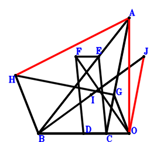
\(\because \) B, D, C are collinear and BD=2DC \(\therefore \small\overrightarrow{OD}=\dfrac{\small\overrightarrow{OB}}{3} + \dfrac{2 \small\overrightarrow{OC}}{3}\).\(\because \) B, E, A are collinear and BE=2EA \(\therefore \small\overrightarrow{OE}=\dfrac{2 \small\overrightarrow{OA}}{3} + \dfrac{\small\overrightarrow{OB}}{3}\).\(\because \) FDCE is a parallelogram \(\therefore \small\overrightarrow{OF}=\dfrac{2 \small\overrightarrow{OA}}{3} + \dfrac{2 \small\overrightarrow{OB}}{3} - \dfrac{\small\overrightarrow{OC}}{3}\).\(\because \) C, G, A are collinear and GA=2CG \(\therefore \small\overrightarrow{OG}=\dfrac{\small\overrightarrow{OA}}{3} + \dfrac{2 \small\overrightarrow{OC}}{3}\).\(\because \) HB//GO and 2HB=3GO \(\therefore \small\overrightarrow{OH}=\small\overrightarrow{OB} + \dfrac{3 \small\overrightarrow{OG}}{2}=\dfrac{\small\overrightarrow{OA}}{2} + \small\overrightarrow{OB} + \small\overrightarrow{OC}\).\(\because \) I is the centroid of △ABC \(\therefore \small\overrightarrow{OI}=\dfrac{\small\overrightarrow{OA}}{3} + \dfrac{\small\overrightarrow{OB}}{3} + \dfrac{\small\overrightarrow{OC}}{3}\).\(\because \) I is the midpoint of BJ \(\therefore \small\overrightarrow{OJ}=- \small\overrightarrow{OB} + 2 \small\overrightarrow{OI}=\dfrac{2 \small\overrightarrow{OA}}{3} - \dfrac{\small\overrightarrow{OB}}{3} + \dfrac{2 \small\overrightarrow{OC}}{3}\).\(\because \) \(FO^{2}=BO^{2} + CO^{2}\) \( \therefore- \small\overrightarrow{OB}^{2} - \small\overrightarrow{OC}^{2} + \small\overrightarrow{OF}^{2}=- \small\overrightarrow{OB}^{2} - \small\overrightarrow{OC}^{2} + \left(\dfrac{2 \small\overrightarrow{OA}}{3} + \dfrac{2 \small\overrightarrow{OB}}{3} - \dfrac{\small\overrightarrow{OC}}{3}\right)^{2}=\dfrac{4 \small\overrightarrow{OA}^{2}}{9} + \dfrac{8 \small\overrightarrow{OA} \cdot \small\overrightarrow{OB}}{9} - \dfrac{4 \small\overrightarrow{OA} \cdot \small\overrightarrow{OC}}{9} - \dfrac{5 \small\overrightarrow{OB}^{2}}{9} - \dfrac{4 \small\overrightarrow{OB} \cdot \small\overrightarrow{OC}}{9} - \dfrac{8 \small\overrightarrow{OC}^{2}}{9}=0.\)In conclusion, \(\dfrac{4 \small\overrightarrow{AH}^{2}}{9} - \small\overrightarrow{OA}^{2} + \small\overrightarrow{OJ}^{2}=- \small\overrightarrow{OA}^{2} + \small\overrightarrow{OJ}^{2} + \dfrac{4 \left(- \small\overrightarrow{OA} + \small\overrightarrow{OH}\right)^{2}}{9}=- \small\overrightarrow{OA}^{2} + \dfrac{4 \left(- \dfrac{\small\overrightarrow{OA}}{2} + \small\overrightarrow{OB} + \small\overrightarrow{OC}\right)^{2}}{9} + \left(\dfrac{2 \small\overrightarrow{OA}}{3} - \dfrac{\small\overrightarrow{OB}}{3} + \dfrac{2 \small\overrightarrow{OC}}{3}\right)^{2}=- \dfrac{4 \small\overrightarrow{OA}^{2}}{9} - \dfrac{8 \small\overrightarrow{OA} \cdot \small\overrightarrow{OB}}{9} + \dfrac{4 \small\overrightarrow{OA} \cdot \small\overrightarrow{OC}}{9} + \dfrac{5 \small\overrightarrow{OB}^{2}}{9} + \dfrac{4 \small\overrightarrow{OB} \cdot \small\overrightarrow{OC}}{9} + \dfrac{8 \small\overrightarrow{OC}^{2}}{9}=0\), that is, \(AO^{2}=\dfrac{4 HA^{2}}{9} + OJ^{2}\).
Exercise 25532： Let CHOG be a parallelogram. BDEA is a trapezoid with EA//DB and EA=3DB. F is the centroid of △CEA. G is the centroid of △BCA. C, D, B are collinear and CD=2DB. I is the midpoint of OA. HG=CO and FO=OA. Prove that OB=2GI.
Exercise 25716： Let FDCE be a parallelogram. IACJ is a trapezoid with AC//IJ and AC=3IJ. G is the centroid of △BAC. A, E, B are collinear and AE=2EB. A, D, C are collinear and AD=2DC. B, I, C are collinear and IC=2BI. G is the midpoint of HB. HO=BO and FO=AO. Prove that OJ=OC.
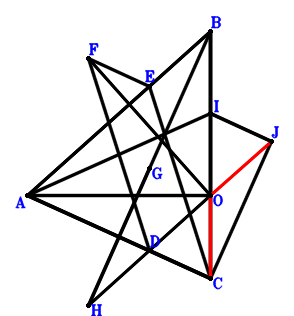
\(\because \) A, D, C are collinear and AD=2DC \(\therefore \small\overrightarrow{OD}=\dfrac{\small\overrightarrow{OA}}{3} + \dfrac{2 \small\overrightarrow{OC}}{3}\).\(\because \) A, E, B are collinear and AE=2EB \(\therefore \small\overrightarrow{OE}=\dfrac{\small\overrightarrow{OA}}{3} + \dfrac{2 \small\overrightarrow{OB}}{3}\).\(\because \) FDCE is a parallelogram \(\therefore \small\overrightarrow{OF}=\dfrac{2 \small\overrightarrow{OA}}{3} + \dfrac{2 \small\overrightarrow{OB}}{3} - \dfrac{\small\overrightarrow{OC}}{3}\).\(\because \) G is the centroid of △BAC \(\therefore \small\overrightarrow{OG}=\dfrac{\small\overrightarrow{OA}}{3} + \dfrac{\small\overrightarrow{OB}}{3} + \dfrac{\small\overrightarrow{OC}}{3}\).\(\because \) G is the midpoint of HB \(\therefore \small\overrightarrow{OH}=- \small\overrightarrow{OB} + 2 \small\overrightarrow{OG}=\dfrac{2 \small\overrightarrow{OA}}{3} - \dfrac{\small\overrightarrow{OB}}{3} + \dfrac{2 \small\overrightarrow{OC}}{3}\).\(\because \) B, I, C are collinear and IC=2BI \(\therefore \small\overrightarrow{OI}=\dfrac{2 \small\overrightarrow{OB}}{3} + \dfrac{\small\overrightarrow{OC}}{3}\).\(\because \) AC//IJ and AC=3IJ \(\therefore \small\overrightarrow{OJ}=- \dfrac{\small\overrightarrow{OA}}{3} + \dfrac{2 \small\overrightarrow{OB}}{3} + \dfrac{2 \small\overrightarrow{OC}}{3}\).\(\because \) FO=AO \(\therefore - \small\overrightarrow{OA}^{2} + \small\overrightarrow{OF}^{2}=- \small\overrightarrow{OA}^{2} + \left(\dfrac{2 \small\overrightarrow{OA}}{3} + \dfrac{2 \small\overrightarrow{OB}}{3} - \dfrac{\small\overrightarrow{OC}}{3}\right)^{2}=- \dfrac{5 \small\overrightarrow{OA}^{2}}{9} + \dfrac{8 \small\overrightarrow{OA} \cdot \small\overrightarrow{OB}}{9} - \dfrac{4 \small\overrightarrow{OA} \cdot \small\overrightarrow{OC}}{9} + \dfrac{4 \small\overrightarrow{OB}^{2}}{9} - \dfrac{4 \small\overrightarrow{OB} \cdot \small\overrightarrow{OC}}{9} + \dfrac{\small\overrightarrow{OC}^{2}}{9}=0\) . . . . . . \(①\)\(\because \) HO=BO \(\therefore - \small\overrightarrow{OB}^{2} + \small\overrightarrow{OH}^{2}=- \small\overrightarrow{OB}^{2} + \left(\dfrac{2 \small\overrightarrow{OA}}{3} - \dfrac{\small\overrightarrow{OB}}{3} + \dfrac{2 \small\overrightarrow{OC}}{3}\right)^{2}=\dfrac{4 \small\overrightarrow{OA}^{2}}{9} - \dfrac{4 \small\overrightarrow{OA} \cdot \small\overrightarrow{OB}}{9} + \dfrac{8 \small\overrightarrow{OA} \cdot \small\overrightarrow{OC}}{9} - \dfrac{8 \small\overrightarrow{OB}^{2}}{9} - \dfrac{4 \small\overrightarrow{OB} \cdot \small\overrightarrow{OC}}{9} + \dfrac{4 \small\overrightarrow{OC}^{2}}{9}=0\) . . . . . . \(②\)In conclusion, \(- \small\overrightarrow{OC}^{2} + \small\overrightarrow{OJ}^{2}=- \small\overrightarrow{OC}^{2} + \left(- \dfrac{\small\overrightarrow{OA}}{3} + \dfrac{2 \small\overrightarrow{OB}}{3} + \dfrac{2 \small\overrightarrow{OC}}{3}\right)^{2}=\dfrac{\small\overrightarrow{OA}^{2}}{9} - \dfrac{4 \small\overrightarrow{OA} \cdot \small\overrightarrow{OB}}{9} - \dfrac{4 \small\overrightarrow{OA} \cdot \small\overrightarrow{OC}}{9} + \dfrac{4 \small\overrightarrow{OB}^{2}}{9} + \dfrac{8 \small\overrightarrow{OB} \cdot \small\overrightarrow{OC}}{9} - \dfrac{5 \small\overrightarrow{OC}^{2}}{9}=-①-②=0\), that is, OJ=OC.
Exercise 26328： Let DCAB and FCGO be parallelograms. IAOH is a trapezoid with IA//HO and 2IA=3HO. F is the centroid of △BCA. D, E, A are collinear and EA=2DE. C, H, B are collinear and HB=2CH. \(CO^{2}=EO^{2} + FG^{2}\). Prove that \(\dfrac{4 IB^{2}}{9}=AO^{2} + BO^{2}\).
Exercise 26947： Let ADOB be a trapezoid with AB//DO and AB=3DO. OJCB is a trapezoid with CB//JO and CB=3JO. C, G, A are collinear and GA=2CG. C, E, B are collinear and EB=2CE. A, F, B are collinear and AF=2FB. A, K, B are collinear and KB=2AK. H is the midpoint of GF and OI. \(OB^{2}=BI^{2} + DE^{2}\). Prove that \(JK^{2}=OA^{2} + OC^{2}\).
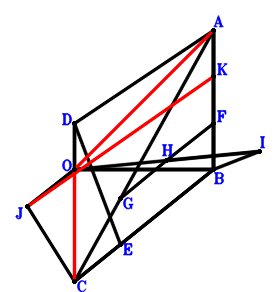
\(\because \) AB//DO and AB=3DO \(\therefore \small\overrightarrow{BD}=\dfrac{\small\overrightarrow{BA}}{3} + \small\overrightarrow{BO}\).\(\because \) C, E, B are collinear and EB=2CE \(\therefore \small\overrightarrow{BE}=\dfrac{2 \small\overrightarrow{BC}}{3}\).\(\because \) A, F, B are collinear and AF=2FB \(\therefore \small\overrightarrow{BF}=\dfrac{\small\overrightarrow{BA}}{3}\).\(\because \) C, G, A are collinear and GA=2CG \(\therefore \small\overrightarrow{BG}=\dfrac{\small\overrightarrow{BA}}{3} + \dfrac{2 \small\overrightarrow{BC}}{3}\).\(\because \) H is the midpoint of GF \(\therefore \small\overrightarrow{BH}=\dfrac{\small\overrightarrow{BA}}{6} + \dfrac{\small\overrightarrow{BG}}{2}=\dfrac{\small\overrightarrow{BA}}{3} + \dfrac{\small\overrightarrow{BC}}{3}\).\(\because \) H is the midpoint of OI \(\therefore \small\overrightarrow{BI}=2 \small\overrightarrow{BH} - \small\overrightarrow{BO}=\dfrac{2 \small\overrightarrow{BA}}{3} + \dfrac{2 \small\overrightarrow{BC}}{3} - \small\overrightarrow{BO}\).\(\because \) CB//JO and CB=3JO \(\therefore \small\overrightarrow{BJ}=\dfrac{\small\overrightarrow{BC}}{3} + \small\overrightarrow{BO}\).\(\because \) A, K, B are collinear and KB=2AK \(\therefore \small\overrightarrow{BK}=\dfrac{2 \small\overrightarrow{BA}}{3}\).\(\because \) \(OB^{2}=BI^{2} + DE^{2}\) \( \therefore\small\overrightarrow{BI}^{2} + \small\overrightarrow{DE}^{2} - \small\overrightarrow{OB}^{2}=\small\overrightarrow{BI}^{2} - \small\overrightarrow{BO}^{2} + \left(- \small\overrightarrow{BD} + \small\overrightarrow{BE}\right)^{2}=- \small\overrightarrow{BO}^{2} + \left(- \dfrac{\small\overrightarrow{BA}}{3} + \dfrac{2 \small\overrightarrow{BC}}{3} - \small\overrightarrow{BO}\right)^{2} + \left(\dfrac{2 \small\overrightarrow{BA}}{3} + \dfrac{2 \small\overrightarrow{BC}}{3} - \small\overrightarrow{BO}\right)^{2}=\dfrac{5 \small\overrightarrow{BA}^{2}}{9} + \dfrac{4 \small\overrightarrow{BA} \cdot \small\overrightarrow{BC}}{9} - \dfrac{2 \small\overrightarrow{BA} \cdot \small\overrightarrow{BO}}{3} + \dfrac{8 \small\overrightarrow{BC}^{2}}{9} - \dfrac{8 \small\overrightarrow{BC} \cdot \small\overrightarrow{BO}}{3} + \small\overrightarrow{BO}^{2}=0.\)In conclusion, \(\small\overrightarrow{JK}^{2} - \small\overrightarrow{OA}^{2} - \small\overrightarrow{OC}^{2}=- \left(\small\overrightarrow{BA} - \small\overrightarrow{BO}\right)^{2} - \left(\small\overrightarrow{BC} - \small\overrightarrow{BO}\right)^{2} + \left(- \small\overrightarrow{BJ} + \small\overrightarrow{BK}\right)^{2}=- \left(\small\overrightarrow{BA} - \small\overrightarrow{BO}\right)^{2} - \left(\small\overrightarrow{BC} - \small\overrightarrow{BO}\right)^{2} + \left(\dfrac{2 \small\overrightarrow{BA}}{3} - \dfrac{\small\overrightarrow{BC}}{3} - \small\overrightarrow{BO}\right)^{2}=- \dfrac{5 \small\overrightarrow{BA}^{2}}{9} - \dfrac{4 \small\overrightarrow{BA} \cdot \small\overrightarrow{BC}}{9} + \dfrac{2 \small\overrightarrow{BA} \cdot \small\overrightarrow{BO}}{3} - \dfrac{8 \small\overrightarrow{BC}^{2}}{9} + \dfrac{8 \small\overrightarrow{BC} \cdot \small\overrightarrow{BO}}{3} - \small\overrightarrow{BO}^{2}=0\), that is, \(JK^{2}=OA^{2} + OC^{2}\).
Exercise 29732： Let EODA and GOFB be parallelograms. D is the centroid of △ACB. A, H, B are collinear and HB=2AH. C, F, B are collinear and FB=2CF. I is the midpoint of OC. \(OB^{2}=ED^{2} + HG^{2}\). Prove that \(4 ID^{2}=AO^{2} + OC^{2}\).
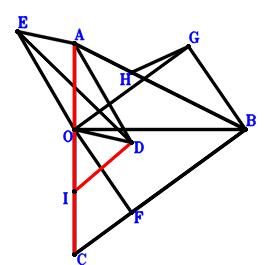
\(\because \) D is the centroid of △ACB \(\therefore \small\overrightarrow{BD}=\dfrac{\small\overrightarrow{BA}}{3} + \dfrac{\small\overrightarrow{BC}}{3}\).\(\because \) EODA is a parallelogram \(\therefore \small\overrightarrow{BE}=\small\overrightarrow{BA} - \small\overrightarrow{BD} + \small\overrightarrow{BO}=\dfrac{2 \small\overrightarrow{BA}}{3} - \dfrac{\small\overrightarrow{BC}}{3} + \small\overrightarrow{BO}\).\(\because \) C, F, B are collinear and FB=2CF \(\therefore \small\overrightarrow{BF}=\dfrac{2 \small\overrightarrow{BC}}{3}\).\(\because \) GOFB is a parallelogram \(\therefore \small\overrightarrow{BG}=- \small\overrightarrow{BF} + \small\overrightarrow{BO}=- \dfrac{2 \small\overrightarrow{BC}}{3} + \small\overrightarrow{BO}\).\(\because \) A, H, B are collinear and HB=2AH \(\therefore \small\overrightarrow{BH}=\dfrac{2 \small\overrightarrow{BA}}{3}\).\(\because \) I is the midpoint of OC \(\therefore \small\overrightarrow{BI}=\dfrac{\small\overrightarrow{BC}}{2} + \dfrac{\small\overrightarrow{BO}}{2}\).\(\because \) \(OB^{2}=ED^{2} + HG^{2}\) \( \therefore\small\overrightarrow{ED}^{2} + \small\overrightarrow{GH}^{2} - \small\overrightarrow{OB}^{2}=- \small\overrightarrow{BO}^{2} + \left(\small\overrightarrow{BD} - \small\overrightarrow{BE}\right)^{2} + \left(- \small\overrightarrow{BG} + \small\overrightarrow{BH}\right)^{2}=- \small\overrightarrow{BO}^{2} + \left(- \dfrac{\small\overrightarrow{BA}}{3} + \dfrac{2 \small\overrightarrow{BC}}{3} - \small\overrightarrow{BO}\right)^{2} + \left(\dfrac{2 \small\overrightarrow{BA}}{3} + \dfrac{2 \small\overrightarrow{BC}}{3} - \small\overrightarrow{BO}\right)^{2}=\dfrac{5 \small\overrightarrow{BA}^{2}}{9} + \dfrac{4 \small\overrightarrow{BA} \cdot \small\overrightarrow{BC}}{9} - \dfrac{2 \small\overrightarrow{BA} \cdot \small\overrightarrow{BO}}{3} + \dfrac{8 \small\overrightarrow{BC}^{2}}{9} - \dfrac{8 \small\overrightarrow{BC} \cdot \small\overrightarrow{BO}}{3} + \small\overrightarrow{BO}^{2}=0.\)In conclusion, \(4 \small\overrightarrow{ID}^{2} - \small\overrightarrow{OA}^{2} - \small\overrightarrow{OC}^{2}=- \left(\small\overrightarrow{BA} - \small\overrightarrow{BO}\right)^{2} - \left(\small\overrightarrow{BC} - \small\overrightarrow{BO}\right)^{2} + 4 \left(\small\overrightarrow{BD} - \small\overrightarrow{BI}\right)^{2}=- \left(\small\overrightarrow{BA} - \small\overrightarrow{BO}\right)^{2} - \left(\small\overrightarrow{BC} - \small\overrightarrow{BO}\right)^{2} + 4 \left(\dfrac{\small\overrightarrow{BA}}{3} - \dfrac{\small\overrightarrow{BC}}{6} - \dfrac{\small\overrightarrow{BO}}{2}\right)^{2}=- \dfrac{5 \small\overrightarrow{BA}^{2}}{9} - \dfrac{4 \small\overrightarrow{BA} \cdot \small\overrightarrow{BC}}{9} + \dfrac{2 \small\overrightarrow{BA} \cdot \small\overrightarrow{BO}}{3} - \dfrac{8 \small\overrightarrow{BC}^{2}}{9} + \dfrac{8 \small\overrightarrow{BC} \cdot \small\overrightarrow{BO}}{3} - \small\overrightarrow{BO}^{2}=0\), that is, \(4 ID^{2}=AO^{2} + OC^{2}\).